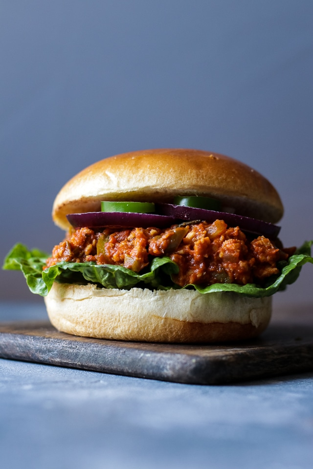

Vegan Sloppy Joes

Recipe by Nate
Quick and Easy Vegan Recipe
Making vegan sloppy joes will only take 15. They will taste
delicous and are definitely an easy go to for any vegan.
The sloppy joes can be spiced up however you see fit. Adding toppings
such as pickles or red onions is totally up to you!
Ingredients
- Ketchup
- Yellow Mustard
- Barbaque Sauce (avoid any "flavored bbq such as honey barbaque
sauce
- Beyond Meat Burger Patty or any other substitute meat
- Hamburger Buns
- 1 Red Pepper
- 1 Poblano Pepper
- Start by browning your "meat" in a skillet.
- Once meat is browned add in your diced red pepper and diced
poblano pepper.
- Once the peppers start to soften add your ketchup, Mustard
and barbaque sauce. Add enough sauce so that everything is coated.
- Serve on a toasted hamburger bun.